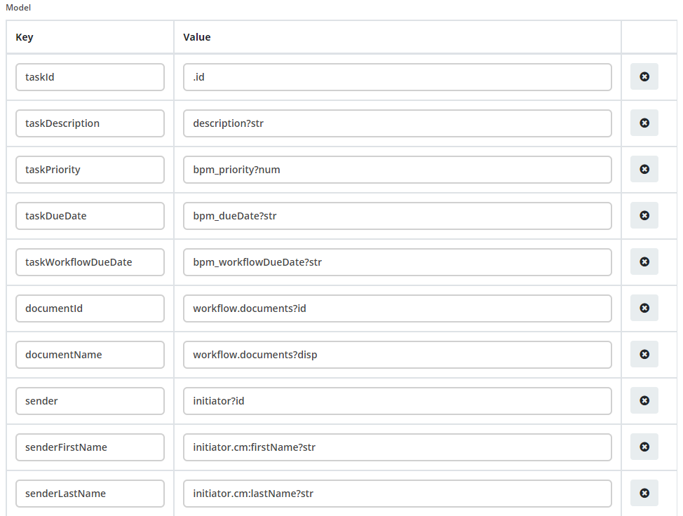
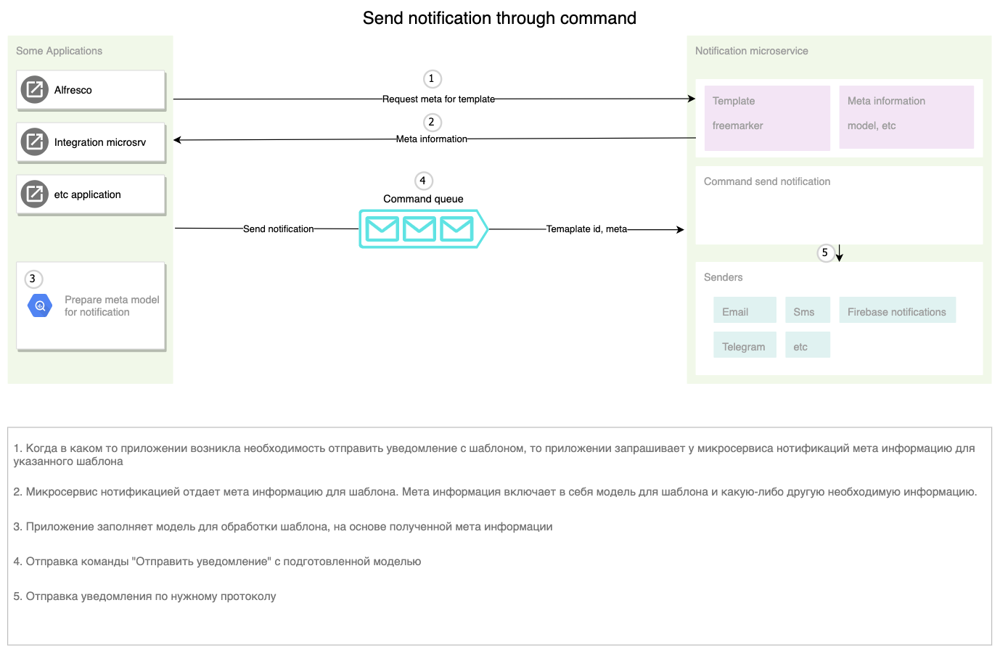
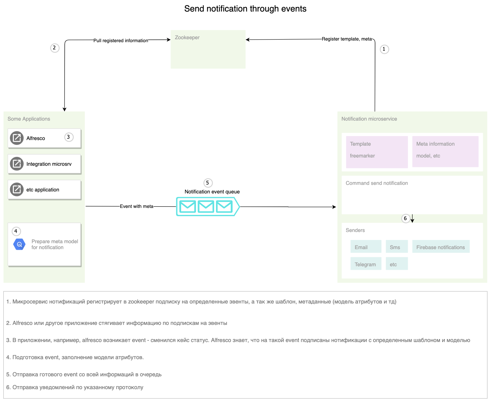
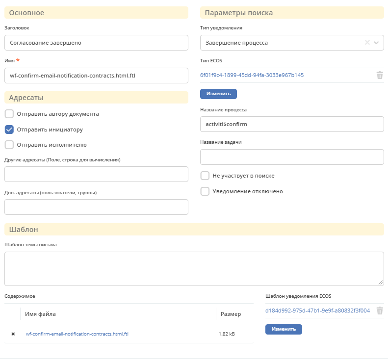

Уведомления¶
Основная настройка¶
Template content (Шаблон, тело письма)¶
В поле Содержимое находиться шаблон который отправляется на стороне Alfresco. Для отправки уведомления через новый микросервис в поле Шаблон уведомления ECOS нужно выбрать уже созданный шаблон из журнала Шаблоны уведомлений. Поле содержимое можно оставить пустым.
В данных уведомлений в качестве основной записи уведомления используется ru.citeck.ecos.notification.task.record.TaskExecutionRecord с следующими полями: - name, title, description, .id - Map<String, Object> workflow - Свойства задачи процесса, обычно содержит id и документы (documents) - Map<String, Object>properties - Свойства полученные из таски. Для получение свойства опускается префикс properties. (например просто bpm_priority)
В переменную $subject ложиться тема которая вычисляется в нотификаторе.
Freemarker¶
Eng (offical): Apache freemaker manual
Rus: FreeMarker шаблоны и Введение в использование FreeMarker
Отправка уведомлений через команду¶
Отправка уведомлений через команду. Например команда отправить емейл в flowable, действие в кейс менеджменте.
Уведомление через событие¶
Для настройки уведомлений на определённые события добавлен системный журнал “Уведомления о событиях”. .. info:: Данный журнал является временным решением перехода старой отправки уведомлений через новый микросервис.
Предупреждение
При создании уведомления через журнал, уведомление ложиться по пути: /app:company_home/app:dictionary/app:email_templates/cm:workflownotification
Отправка уведомлений как реакция на событие - сменился кейс статус, изменился атрибут, назначалась задача и т.д.
Форма уведомления¶
Тип уведомления¶
При каком либо событии, например переназначении задачи, ищется шаблон в журнале с фильтром по полю “Тип уведомления”. Если установлена галочка “Не участвует в поиске”, шаблон игнорируется.
Логика поиска шаблона¶
Шаблон можно привязывать к типу кейса, процессу Activity/Flowable и задаче, для этого используются следующие поля соответственно “Тип ECOS”, “Название процесса”, “Название задачи”.
Приоритет выбора шаблона следующий “Название задачи” >“Название процесса” > “Тип ECOS”. Пример: мы можем задать на для определенной задачи шаблон, он будет применён для всех типов кейсов и для всех процессов. Но если создадим шаблон для такой же задачи, но укажем тип кейса, то для указанного типа кейса и задачи будет выбран этот шаблон.
Отключение/Включении уведомлений¶
Для отключение уведомления по фильтру необходимо установить галочку Уведомление отключено
Если по умолчанию необходимо отключить отправку уведомлений, создаём запасись с пустыми полями типа ecos, процесса и задачи. Тогда отправка по умолчанию будет отключена.
Для полного отключения уведомлений необходимого добавить properites со значением false.
notification.cancel.workflow.enabled=true
notification.complete.task.enabled=true
notification.complete.workflow.enabled=true
notification.document.change.enabled=true
notification.for.log.item.enabled=true
notification.pool.task.enabled=true
notification.reassing.task.enabled=true
notification.start.task.enabled=true
notification.start.workflow.enabled=true
workflow.notification.overdue.enabled=true
workflow.notification.workflow.overdue.enabled=true
Адресаты¶
Поля Отправить автору документа, Отправить инициатору, Отправить исполнителю, Другие адресаты (Поле, строка для вычисления), Доп. адресаты (пользователи, группы) позволяют регулировать кому будет отправлено уведомление.
Примечание
Для некоторых уведомлений выбор адресата может не работать. Проверить кому отправляется можно в классах нотификатора com-core ru.citeck.ecos.notification. Например для DocumentNotificationSender не реализованы функции получения для отправки инициатору и исполнителю.
Обработка для отправки нотификаций по задачам¶
При получении events осуществляется проверка подписок, если находится «подписчик» на текущий тип event, то проверяется наличие пользователя в pooledActors и условия отправки. При совпадении пользователя и выполнении условия, происходит передача event в обработчики. Сейчас реализован обработчик - firebase notifications.
Условия отправки¶
Моделью данных для вычисления условия и шаблона является сам event + дополнительная информация, которую можно запросить по records api. Сейчас можно запросить данные из alfresco (реализовано через basic auth, выделяется отдельный пользователь).
Условие вычисляется на groovy.
Шаблон обрабатывает freemarker.
При построении запроса в records api, так же можно использовать шаблонизатор freemarker для доступа к модели events.